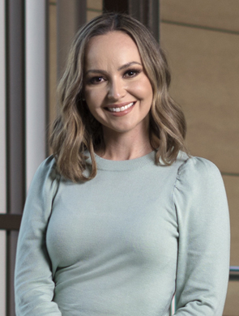

Odont. Cinthia Lorena
Borbón Esquer

Prioridad en cualquier edad
Más allá de una cuestión de estética, para Cinthia Lorena Borbón Esquer la ortodoncia es materia de prevención y salud bucodental, conozca la opinión de la experta
Redacción BS
edicionrevistabs@gmail.com
Siendo el apiñamiento dental por falta de espacio el tipo de maloclusión más frecuente y el principal motivo de consulta de ortodoncia, resulta crucial entender cómo la correcta alineación dental contribuye no únicamente a tener una sonrisa armónica, sino también a tener una mejor salud bucal.
“Una buena alineación dental y una correcta mordida nos dan como resultado no sólo estética sino también función adecuada, salud oral y articular por un buen equilibrio muscular y dental, evitando enfermedad periodontal, dada por el apiñamiento (higiene deficiente), trauma oclusal (fuerzas oclusales no adecuadas), y articular por la correcta función de dientes y músculos”, compartió en plática con Revista BS Cinthia Lorena Borbón Esquer.
La especialista en ortodoncia, habló de la importancia de la atención temprana de los problemas de ortodoncia para la prevención de complicaciones.
“La valoración temprana en niños es importante para una atención oportuna de afecciones tanto dentales como óseas”, explicó, “la ortodoncia preventiva e interceptiva nos ayudan a evitar problemas futuros que pueden ser más complicados de corregir en etapas de desarrollo más avanzadas”.
Borbón Esquer comentó que incluso desde los “dientes de leche” los profesionales pueden detectar problemas de mordida y de espacio, de ahí que la revisión temprana sea la recomendación. “Lo ideal es una valoración antes del recambio dental, que comienza a los 6 años, y si no se encuentra algún problema, la revisión está indicada cada año para ir descartando afecciones en cada etapa del crecimiento y desarrollo”, indicó.
Ortodoncia ahora
Resultados precisos y en menor tiempo es en el presente la meta de la ortodoncia, la entrevistada habló de los avances tecnológicos que marcan la tendencia en esta rama odontológica.
“Los pacientes de hoy buscan tratamientos estéticos ya no tan largos, por lo que adaptándonos a esas necesidades tenemos la opción de uno de los tratamientos más estéticos, cómodos y predecibles que son los alineadores invisibles (Invisalign), y si lo combinamos con alguna técnica de ortodoncia acelerada como láser terapéutico, que es una práctica novedosa en nuestra área, nos da excelentes resultados”, describió. Si bien, la ortodoncia preventiva e interceptiva es lo ideal, siempre es buen momento para atender problemas de alineamiento en dentadura o mordida, señaló Cinthia Lorena Borbón Esquer.
“No importa la edad que se tenga para llevar un tratamiento de ortodoncia, en la actualidad existen técnicas adecuadas para casi todo tipo de diagnósticos, así que nunca es tarde para una revisión y tratamiento para su problema, acérquense para una cita de valoración con algún especialista en ortodoncia”, finalizó.